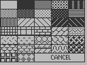

;****************************** ;* S/geoBMode1 ;* ;****************************** .if Pass1 .noeqin .noglbl .include GEOSequates .eqin .glbl .endif .psect jmp Main1 ; VPRGbase + 0 jmp Mod1Click ; VPRGbase + 3 jmp Mod1Recv ; VPRGbase + 6 jmp Mod1Drag ; VPRGbase + 9 jmp Mod1Press ; VPRGbase + 12 jmp ReMain1 ; VPRGbase + 15 .word UnDo Main1: ldb dispBufferOn,#ST_WR_FORE | ST_WR_BACK ldb Tool,#2 ; selection tool is default ldb FilPattern,#1 ; default pattern is filled ldb LbxPattern,#$ff; default pattern for line boxes ldb TxtPattern,#0 ; default text pattern ldb ScreenMode,#0 ; default is not full screen ReMain1: jsr UnWrap jsr ReClick jsr ReTool lda MenuMode ; has menu been initialiZed? bne 10$ inc MenuMode ; no, so initialiZe it ldw R0,#MyMenu lda #0 jsr DoMenu ; set up the pull-down windows bra 11$ ; and skip a redo 10$: jsr ReDoMenu 11$: mvb mouseOn,MenuSave ; save menu checking ldb dispBufferOn,#ST_WR_FORE | ST_WR_BACK rts ReTool: ldb dispBufferOn,#ST_WR_FORE jsr i_BitmapUp .word Mode1Img .byte 0 .byte 20 .byte Mod1wid .byte Mod1hit mvb Tool,A2L jsr ChkClick ; to get Tools dims jsr InvertRectangle ldb dispBufferOn,#ST_WR_FORE | ST_WR_BACK rts ReClick: ldb A2L,#20 ldb A2H,#20+16 ; init first box ldw A3,#0 ldw A4,#15 ldb Temp,#1 10$: ldw A5,#0 mvb Temp,A6L jsr SetClick lda A3L ; are we on the left bne 11$ ldb A3L,#16 ; yes, so move to the right ldb A4L,#31 bra 12$ ; stay on same row, height 11$: ldb A3L,#0 ldb A4L,#15 ; down a row, please avb #16,A2L avb #16,A2H 12$: inc Temp cbi Temp,#9 blt 10$ ; finish the top 7 ldb A4L,#31 ldw A5,#0 svb #1,A2H ; undo is a bit small? mvb Temp,A6L ; this is undo jsr SetClick avb #16,A2L avb #16,A2H ldw A5,#0 ldb A6L,#10 ; this is full screen jsr SetClick rts UnClick: ldb Temp,#0 sta A2L sta A2H sta A3L sta A3H sta A4L sta A4H sta A5L sta A5H 10$: lda Temp sta A6L jsr SetClick inc Temp cbi Temp,#11 blt 10$ rts UnWrap: mvw rightMargin,UnWr1 lda #ST_WR_FORE | ST_WR_BACK sta dispBufferOn jsr i_GraphicsString .byte NEWPATTERN,0 .byte MOVEPENTO,0,0,0 .byte RECTANGLETO UnWr1: .word 319 .byte 199 .byte 0 ; done clearing screen ldw A0,#DataStart jsr UnWrpLp1 ldw A0,#DataStart jmp UnWrpLp2 UnWrpLp1: jsr UnWrpNx bne 10$ rts ; all done 10$: cmp #4 ; is it line, linebox, or fbox? bgt 15$ jsr UnWrBox ; get R2-R4 lda Temp+3 ; now get command back cmp #1 ; do a simple line please bne 12$ mvw R2,R11 ; put y in right place lda #0 sec jsr DrawLine ; draw the damn line jmp UnWrapDo 12$: cmp #2 bne 13$ jmp UnWrapDo 13$: cmp #3 ; unwrap a lined box please bne 14$ mvb Temp+4,LbxPattern lda LbxPattern ; set this funny number up jsr FrameRectangle jmp UnWrapDo 14$: cmp #4 ; do a filled box please bne 15$ mvb Temp+4,FilPattern jsr SetPattern ; set the fill box pattern jsr Rectangle jmp UnWrapDo 15$: cmp #5 ; do some text please bne 16$ jsr UnWrBox ; get R2-R4 -- for what its worth mvb Temp+4,TxtPattern jsr UnWrTxt jmp UnWrapDo 16$: cmp #6 ; is it bitmap of some sort? beq 17$ jmp UnWrapDo ; don't unwrap clickboxes yet 17$: jsr UnWrBox mvw R3,R1 mvb R4L,R2H ; get bytes in right place mvw A0,R0 avw #8,R0 jsr BitmapUp ; put it on the screen! 99$: jmp UnWrapDo UnWrapDo: adw Temp,A0 ; get ready for next command lda #0 sta $2e ; always make sure text patt ok jmp UnWrpLp1 UnWrpLp2: jsr UnWrpNx ; now unwrap click boxes beq 99$ cmp #7 beq 10$ adw Temp,A0 ; get ready for next command jmp UnWrpLp2 99$: rts ; all done 10$: jsr UnWrBox mvw R3,R1 mvb R4L,R2H ; get bytes in right place mvw A0,R0 avw #8,R0 jsr BitmapUp ; put it on the screen! adw Temp,A0 ; get ready for next command jmp UnWrpLp2 UnWrTxt: lda TxtPattern sta $2e ; set the fill box pattern mvw R3,R11 mvb R2H,R1H ; position the cursor svb #2,R1H ; underline adjustment mvw A0,R0 avw #10,R0 jsr PutString ; write out the text!! lda #0 sta $2e rts UnWrapGet: lda (A0),y iny rts UnWrBox: ldy #4 jsr UnWrapGet ; get start x lsb sta R3L jsr UnWrapGet ; get start x hsb sta R3H jsr UnWrapGet ; get start y sta R2L jsr UnWrapGet ; get end x lsb sta R4L jsr UnWrapGet ; get end x hsb sta R4H jsr UnWrapGet ; get end y sta R2H rts UnWrpNx: cpw A0,EndOData ; out of data yet? blt 11$ lda #0 rts ; nothing to do, exit 11$: ldy #1 lda (A0),y ; set the pattern first sta Temp+4 ; the temp place for patterns ldy #2 ; then get bytes lsb lda (A0),y sta Temp iny lda (A0),y ; then bytes hsb sta Temp+1 ldy #0 lda (A0),y ; now get command sta Temp+3 rts Mod1Click: cbi mouseData,#0 ; is the button down or up? beq 11$ cbi DragFlag,#1 ; need to permaniZe? bne 10$ ldb DragFlag,#2 ldb dispBufferOn,#ST_WR_FORE | ST_WR_BACK jsr Mod1Drag ; make it permanent! jsr UnScrnMod 10$: ldb DragFlag,#0 ; clear the drag flag rts ; button is released 11$: ldb A2L,#1 ; start to check buttons, from 1 12$: jsr ChkClick ; check the main buttons cpx #0 beq 16$ ; found a click! inc A2L cbi A2L,#10 ; until 10, keep checking... ble 12$ ; no button pressed, so in screen? 90$: lda ScreenMode ; check for full screen bne 13$ ldw R3,#32 ; check for main screen area mvw rightMargin,R4 ldb R2L,#15 mvb windowBot,R2H ; menu and tool bar jsr IsMseInRegion ; not full screen, so check area cmp #$ff bne 10$ ; it's outside protected area, so exit 13$: cbi Tool,#8 ; do not set drag mode for non-tools bge 15$ cmp #2 ; the select tool is a special case bne 14$ jmp SelClick ; handle clicks for selection specially 14$: ldb DragFlag,#1 ; you can set the drag flag mvw mouseXPos,DragX mvb mouseYPos,DragX+2 ; save drag start ldw DragX2,#0 ldb DragX2+2,#$ff ; init old drag point 15$: ldb dispBufferOn,#ST_WR_FORE | ST_WR_BACK rts ; nothing doin 16$: cpb A2L,Tool beq 15$ ; don't bother selected tool cbi A2L,#8 blt 18$ ; only 1-7 are REAL tools bne 17$ ; do a quick patt butt check cbi Tool,#2 ; is selection tool selected? bne 17$ jmp PattEdit ; do selected patts now, please 17$: ldb dispBufferOn,#ST_WR_FORE mvb A2L,Temp jsr ChkClick ; invert the pseudo-tool jsr InvertRectangle jmp Mod1Othr ; and handle it (undo, fulscrn, etc) 18$: jsr ClrSelect ; clear selection just in case ldb dispBufferOn,#ST_WR_FORE mvb A2L,Temp ; temporarily save new tool mvb Tool,A2L ; and restore old tool to uninvert jsr ChkClick ; to get R2-R4 jsr InvertRectangle ; to uninvert old tool mvb Temp,Tool ; now permaniZe the new tool mvb Tool,A2L ; and set up to invert it... jsr ChkClick ; to get R2-R4 jsr InvertRectangle ; to invert new tool ldb dispBufferOn,#ST_WR_FORE | ST_WR_BACK rts Mod1Othr: cbi Temp,#8 beq 13$ ; the pattern button was chosen cmp #10 bne 14$ ; this is full screen jsr ClrSelect ; clear selection just in case jsr UnClick jsr UnWrap ; will all this work?? ldb mouseOn,#$a0 ; disable clicking lda #1 sta ScreenMode ; will now skip to 99$ 14$: cmp #9 ; clicked undo? bne 99$ jsr ClrSelect ; select is special for undo jsr UnDo 99$: rts ;** here begins the pattern box button stuff 13$: jsr ClrSelect ; clear selection just in case cbi Tool,#3 bne 10$ ldw R0,#LPatDlg jsr DoDlgBox rts 10$: cbi Tool,#4 bne 11$ ldw R0,#PattDlg jsr DoDlgBox cbi sysDBData,#32 ; illegal pattern selection bge 98$ mvb sysDBData,FilPattern 98$: rts 11$: cbi Tool,#5 bne 12$ ldw R0,#TPatDlg jsr DoDlgBox cbi sysDBData,#2 beq 98$ ; cancel is bad mvb Temp+19,TxtPattern rts 12$: ldw A2,#NoPaText jsr CNCLBox lda #8 jsr ChkClick ; don't do pattern jsr InvertRectangle jmp ReTool NoPaText: .byte $18,"No patterns for that tool.",0 UnDo: cwi EndOData,#DataStart ; is there anything in there? beq 10$ jsr FindSLast ; look for the undoable cwi A1,#0 beq 10$ ; nothing found, so don't undo ldw R0,#UnDoDlg jsr DoDlgBox cbi sysDBData,#3 ; confirm the procedure beq 11$ 10$: jmp ReMain1 11$: mvw A1,A0 ; set source adw A3,A0 ; by adding length ldy #0 12$: lda (A0),y sta (A1),y ; copy data over cpw A0,EndOData bge 13$ ; if just wrote the end, stop inw A0 inw A1 ; otherwise, increment and continue bra 12$ 13$: sbw A3,EndOData ; pull back EndOData jsr ClrBuf2End ; Zero out all we've found... ldb SaveFlag,#1 ; set the damn save flag jmp ReMain1 FindSLast: ldw A0,#DataStart ; start at beginning ldw A2,#0 ; with no movement, bytes=A2 ldw A1,#0 ; save the last move 12$: ldy #2 lda (A0),y ; get the supposed bytes L & h sta A2L iny lda (A0),y ; get the supposed bytes l & H sta A2H ldy #0 lda (A0),y cmp #20 bge 13$ mvw A0,A1 ; found one, so save it mvw A2,A3 ; and save its width 13$: adw A2,A0 ; skip ahead = A0 cpw A0,EndOData ; have we reached the end yet? blt 12$ ; no, so keep looping rts ; A1 should point to last now UnDoDlg: .byte $80 | $01 .byte 11 ;add text .byte $0d,$12 .word UDTxtA .byte $03,$01,$47 ;Yes icon .byte $04,$0f,$47 ;No icon .byte 0 ;end of defintion UDTxtA: .byte $18,"Undo last operation?",27,0 Mod1Recv: jsr RecoverRectangle jsr ClrSelect ; kinda dangerous!! jmp ReTool Mod1Drag: lda DragFlag ; don't bother if not set bne 89$ rts 89$: mvw mouseXPos,Temp ; save your mousex and y mvb mouseYPos,Temp+2 cbi DragFlag,#2 ; if making permanent... bne 90$ mvw DragX2,Temp mvb DragX2+2,Temp+2 ldb DragX2+2,#$ff ; ensure a write cbi Tool,#2 ; selections don't permaniZe beq 91$ jsr EntryDo ; save the entry in buffer beq 90$ ; leave on an error jmp ReMain1 90$: lda ScreenMode ; check for full screen bne 91$ ldw R3,#32 mvw rightMargin,R4 ldb R2L,#15 ldb R2H,#199 ; menu and tool bar jsr IsMseInRegion ; protect these cmp #$ff bne 99$ ; it's out, so exit 91$: cbi DragFlag,#2 ; if making permanent... beq 92$ ldb dispBufferOn,#ST_WR_FORE 92$: cbi Tool,#1 ; is it a line? bne 10$ jmp DragLine 10$: cbi Tool,#3 ; this would be open rec bne 11$ jmp DragOBox 11$: cbi Tool,#4 bne 12$ jmp DragFBox 12$: cbi Tool,#5 bne 13$ jmp StartText 13$: cbi Tool,#6 beq 14$ cbi Tool,#7 bne 15$ ; a bitmap or icon?? 14$: jmp Iconfirm 15$: cbi Tool,#2 ; moving/resiZing selection? bne 99$ ; nope.. and its the last tool jmp DragSel 99$: rts ; only these are done for now StartText: ldw R15,#DataEndP ; check memory remaining sbw EndOData,R15 ; check for 16 bytes cwi R15,#17 bge 90$ ldb DragFlag,#0 ; clear the dragging jsr NoMem ldx #1 ; nope, so leave rts 90$: cbi DragX+2,#192 bge 10$ ; nothing too far down cbi DragX+2,#3 bge 11$ ; nothing up too far 10$: rts 11$: ldb Tool,#9 ; un-set the tool jsr MouseOff jsr ClrBuf2End ; a Zero terminator is important ldb DragFlag,#0 ; disable all that nasty stuff mvw EndOData,R0 avw #10,R0 ; to get past stuff ldy #0 tya sta (R0),y ; to clear text buffer ldb R1L,#0 ; no control stuff ldb R2L,#$f0 ; no minimum input! ldw Temp,#DataEndP sbw EndOData,Temp cwi Temp,#$0d ; check remaining buffer space blt 99$ cwi Temp,#$f0 ; now find usable max bge 12$ svb #8,Temp mvb Temp,R2L ; get usable max chars 12$: mvw DragX,R11 ; starting column mvb DragX+2,R1H ; starting underline avb #6,DragX+2 ; putstring adjustment ldw keyVector,#CRText ldb dispBufferOn,#ST_WR_FORE lda TxtPattern sta $2e ; give me pattern!! jmp GetString 99$: jmp NoMem CRText: ldb Tool,#5 ; re-set the tool jsr EntryDo beq 11$ ; an error, so exit 10$: lda #0 sta $2e ; clear pattern jmp UserMode ; and exit 11$: mvw EndOData,A0 ; reset our pointer... mvw R11,Temp ; save true end x for a spell... ldy #4 lda DragX sta (A0),y ; get mousex< sta R3L ; and save for restore box sta Temp+2 ; and for reprint, save iny lda DragX+1 ; get mousex> sta (A0),y sta R3H ; and save for restore box sta Temp+3 ; and for reprint, save iny lda DragX+2 ; get mousey sta R1H sub curHeight sta (A0),y ; save the y position sta R2L ; save the restore box top iny lda Temp ; R11 saved here before sta (A0),y ; save end x lsb iny lda Temp+1 ; R11 saved here before sta (A0),y ; save end x hsb iny lda R1H add #2 sta (A0),y ; save end y sta R2H ; and save again for restore below iny ldw Temp,#0 ; for text siZe counting lda (A0),y ; first check for ANYTHING! beq 10$ 12$: lda (A0),y ; now check for END beq 13$ iny inc Temp ; keep going til end is found bra 12$ 13$: avb #11,Temp ldy #2 lda Temp ; save actual siZe sta (A0),y adw Temp,EndOData ; make new data end mvw A0,R0 ; restore string pointer avw #10,R0 ; to be pointing at string mvw rightMargin,R4 jsr RecoverRectangle ; here is the restore!!! ldb dispBufferOn,#ST_WR_FORE | ST_WR_BACK mvw Temp+2,R11 ; starting x saved here earler jsr PutString ; now permaniZe the string lda #0 sta $2e ; clear pattern jmp UserMode DragLine: jsr PreDrag bcc 10$ ; if carry clear, then exit mvw DragX,R3 ; orig col point mvb DragX+2,R11L ; orig row point mvw Temp,R4 ; new mouse x mvb Temp+2,R11H ; new mouse y lda FilPattern ; set up the drawing pattern jsr SetPattern ; from the FilPattern lda #0 ; sets norecover flag sec ; sets the draw flag jsr DrawLine ; draw the new line 10$: jmp DragOut ; get out now DragOBox: jsr PreDrag bcc 10$ ; if carry clear, then exit jsr PrepBox ; get dimensions ready lda LbxPattern ; set up the drawing pattern as full jsr FrameRectangle 10$: jmp DragOut ; get out now DragFBox: jsr PreDrag bcc 10$ ; if carry clear, then exit lda FilPattern ; set up the drawing pattern jsr SetPattern ; from the FilPattern jsr PrepBox ; get dimensions ready jsr Rectangle 10$: jmp DragOut ; get out now PreDrag: cbi DragX2+2,#$ff ; dragged before? beq 21$ cpw DragX2,Temp bne 10$ ; are we in the same place? cpb DragX2+2,Temp+2 beq 32$ ; yes, so just get out 10$: mvb DragX+2,R2L ; guess that the orig is the lowest mvb DragX2+2,R2H cpb R2L,R2H ; see if it IS the lowest blt 11$ ; ok so far mvb DragX2+2,R2L mvb DragX+2,R2H ; wrong way on the y, so fix 11$: mvw DragX,R3 mvw DragX2,R4 ; guess that the orig is the lowest cpw R3,R4 blt 12$ ; right, so continue mvw DragX2,R3 mvw DragX,R4 ; wrong way on the x, so fix 12$: jsr RecoverRectangle 21$: sec rts 32$: clc rts PrepBox: 10$: mvb DragX+2,R2L ; guess that the orig is the lowest mvb Temp+2,R2H cpb R2L,R2H ; see if it IS the lowest blt 11$ ; ok so far mvb Temp+2,R2L mvb DragX+2,R2H ; wrong way on the y, so fix 11$: mvw DragX,R3 mvw Temp,R4 ; guess that the orig is the lowest cpw R3,R4 blt 12$ ; right, so continue mvw Temp,R3 mvw DragX,R4 ; wrong way on the x, so fix 12$: rts DragOut: mvw Temp,DragX2 ; make THIS drawn line, the last... mvb Temp+2,DragX2+2 rts EntryDo: ldw R15,#DataEndP ; DragX has start, Temp has mousexy sbw EndOData,R15 ; check for 10 bytes cwi R15,#11 bge 10$ jsr NoMem ldx #1 ; nope, so leave rts 10$: ldb SaveFlag,#1 ; flag the file as dirty cbi Tool,#5 ; was it a line, linebox, or fbox? bge 13$ cmp #1 ; a line needs no adjustment beq 11$ jsr EntrySwap ; possibly transpose boxes 11$: jsr EntryXY ; then save data & startx ldx #0 12$: lda Temp,x ; save endx,y jsr EntrySta inx cpx #3 blt 12$ jmp EntryDone 13$: cbi Tool,#5 ; was it a text tool? bne 14$ jsr EntryXY ; just do position stuff for txt... 14$: ldx #0 rts EntryDone: mvw A0,EndOData ; save new end of data, exit ldx #0 rts EntrySta: ldy #0 ; easy way to put to (A0),y sta (A0),y ; and increment A0 as well... inw A0 rts EntryXY: mvw EndOData,A0 ; yes, so write 10 bytes... lda Tool jsr EntrySta ; save tool ldy Tool ; get the right pattern lda LbxPattern-3,y ; get the right pattern for the job jsr EntrySta ; save pattern lda #10 jsr EntrySta ; save lsb of bytes lda #0 jsr EntrySta ; save hsb of bytes ldx #0 10$: lda DragX,x ; save startx,y jsr EntrySta inx cpx #3 blt 10$ rts EntrySwap: cpb Temp+2,DragX+2 bge 10$ ; bottom is lower (greater) than start? lda Temp+2 tax lda DragX+2 ; no, so swap the y's sta Temp+2 txa sta DragX+2 10$: cpw Temp,DragX bcs 11$ ; right is righter (greater) than start? mvw Temp,Temp+4 mvw DragX,Temp mvw Temp+4,DragX ; no, so swap 'em 11$: rts UnScrnMod: mvb MenuSave,mouseOn ; restore menu pointers lda ScreenMode bne 10$ ; time to END full screen rts 10$: lda #0 sta ScreenMode jmp ReMain1 ; and restart main screen UserMode: jsr MouseUp ; restart the mouse jsr ReDoMenu ; restore the menu (if necessary) jsr ReClick ldb ScreenMode,#0 ; clear it just in case, thanks. jmp ReTool TPatDlg: .byte $80 | $01 .byte 11 ;add text .byte $06,$0d .word TTxtA .byte 11 ;add text .byte $40,$22 .word TTxtB .byte 11 ;add text .byte $40,$2f .word TTxtC .byte 11 ;add text .byte $40,$3e .word TTxtD .byte 11 ;add text .byte $40,$4d .word TTxtE .byte $01,$10,$2d ;OK icon .byte $02,$10,$45 ;Cancel icon .byte 19 ;Routine on draw .word TPatDraw ;routine to execute when DB is drawn .byte 17 ;Routine on Click .word TPatClick ;routine to execute on otherPress .byte 0 ;end of defintion TTxtA: .byte $18,"Select all that apply:",27,0 TTxtB: .byte $18,"Bold",27,0 TTxtC: .byte $0e,"Underline",27,0 TTxtD: .byte $1a,"Outline",27,0 TTxtE: .byte $19,"Italics",27,0 TPatDraw: ldb Temp,#0 ; counter, this routine ldb Temp+19,#0 ; pattern holder ldb R2L,#$3a ldw R3,#110 10$: mvb R2L,R2H avb #10,R2H mvw R3,R4 avw #10,R4 lda #$ff jsr FrameRectangle avb #14,R2L inc Temp cbi Temp,#4 blt 10$ rts TPatClick: lda mouseData bne 99$ ; no action on depression ldb Temp,#0 ; counter, this routine ldb R2L,#$3a ldw R3,#110 10$: mvb R2L,R2H avb #10,R2H mvw R3,R4 avw #10,R4 jsr IsMseInRegion ; check in the box cmp #$ff beq 11$ avb #14,R2L inc Temp cbi Temp,#4 blt 10$ rts 11$: jsr InvertRectangle ldy Temp ; fix new pattern now lda Temp+19 eor TPatTabl,y sta Temp+19 99$: rts TPatTabl: .byte 64,128,8,16 LPatDlg: .byte $00 | 01 ;user position .byte $19 ;top .byte $af ;bottom .word $036 ;left .word $0fa ;right .byte 11 ;add text .byte $07,$0e .word PTTextA .byte $02,$11,$7f ;Cancel icon .byte 19 ;Routine on draw .word LPatDraw ;routine to execute when DB is drawn .byte 17 ;Routine on Click .word LPatClick ;routine to execute on otherPress .byte 0 ;end of defintion PTTextA: .byte $18,"Please select from the following:",27,0 LPatDraw: ldb Temp+2,#$2f ; init the top and bottom ldw Temp,#$040 ldb Temp+3,#0 ; init the pattern LPatLp: cwi Temp,#$ed ; check x bge 11$ ; if gone too far right, CR cbi Temp+2,#$90 ; check y blt 12$ ; if not gone too far, ok rts 11$: ldw Temp,#$040 ; do a semi CR avb #15,Temp+2 jmp LPatLp 12$: mvb Temp+2,R2L sta R2H ; set up a box mvb Temp,R3L sta R4L mvb Temp+1,R3H sta R4H avb #10,R2H avw #10,R4 lda #$ff ; get the pattern jsr FrameRectangle inc R2L inc R2L dec R2H dec R2H ; hope these havn't changed!! avw #2,R3 svw #2,R4 ; lots of bytes lda Temp+3 ; get the current pattern jsr FrameRectangle; and do it real this time avw #15,Temp ; move right avb #3,Temp+3 ; add to pattern..? cbi Temp+3,#249 blt 13$ ldb Temp+3,#$ff 13$: jmp LPatLp LPatClick: ldb Temp+2,#$2f ; init the top and bottom ldw Temp,#$040 ldb Temp+3,#0 ; init the pattern LPatCLp: cwi Temp,#$ed ; check x bge 11$ ; if gone too far right, CR cbi Temp+2,#$90 ; check y blt 12$ ; if not gone too far, ok rts 11$: ldw Temp,#$040 ; do a semi CR avb #15,Temp+2 jmp LPatCLp 12$: mvb Temp+2,R2L sta R2H ; set up a box mvb Temp,R3L sta R4L mvb Temp+1,R3H sta R4H avb #10,R2H avw #10,R4 jsr IsMseInRegion cmp #$ff ; get the pattern beq 15$ avw #15,Temp ; move right avb #3,Temp+3 ; add to pattern..? cbi Temp+3,#249 blt 13$ ldb Temp+3,#$ff 13$: jmp LPatCLp 15$: jsr InvertRectangle mvb Temp+3,LbxPattern jmp RstrFrmDialog Iconfirm: ldb DragFlag,#0 ; this is necessary ldw A2,#ICTxtA jsr YNBox cbi sysDBData,#3 ; confirm the procedure beq 11$ ldx #0 10$: jsr FError ; do file errors if any lda FileDrv jsr SetDevice jmp UnScrnMod 11$: lda DAABdrv ; set up the scrap device jsr SetDevice ldw R6,#ICFNA ldb $886e,#$ff jsr FindFile cpx #0 bne 10$ ; if there were errors, exit (for now) ldy #1 lda (R5),y sta R1L ; get initial track/sector info iny lda (R5),y sta R1H ; now get the first photo scrap blk ldw R4,#$8000 jsr GetBlock ldw R5,#0 ; clear this pointer mvw EndOData,A0 avw #5,A0 ; puts first byte on rowbyte 12$: jsr ReadByte cpx #0 beq 13$ ; can we continue? cpx #11 beq 14$ ; was eof reached? bra 10$ ;****arghhh!!! errors on disk!!!! 13$: ldy #0 sta (A0),y ; store byte inw A0 ; increment pointer cwi A0,#DataEndP ; see if end is reached blt 12$ lda FileDrv ; reset the drive, dammit jsr SetDevice jmp NoMem ; ** this is a bad bad error!!!!! 14$: lda FileDrv ; reset the drive, dammit jsr SetDevice jmp IconDo ; ** see next page ICTxtA: .byte $18,"Paste photo scrap?",27,0 ICFNA: .byte "Photo Scrap",0 IconDo: mvw A0,A1 ; save this valuable pointer sbw EndOData,A1 ; get the total bytes, hopefully mvw EndOData,A2 ldy #7 lda (A2),y ; check an over-height first sta Temp+1 ; save for later beq 16$ 15$: ldw A2,#ICTxtB jsr CNCLBox rts 16$: ldy #6 lda (A2),y ldy #7 sta (A2),y ; save the height byte sta R2H ; save height for bitmapup sta Temp ; get the height ldb DragX+3,#0 ; make the y start a word adw DragX+2,Temp ; add them cwi Temp,#200 99$: bge 15$ ; if it's too big.. bye bye! ldy #5 lda (A2),y ; now get width byte ldy #6 sta (A2),y ; save it for later sta R2L ; save width for bitmapup mvw A2,R0 avw #8,R0 ; position the gfx pointer for later mvb DragX+2,R1H ; set the start y for later ldy #5 sta (A2),y ; save the column byte for later lsr DragX+1 ; start division baby ror DragX lsr DragX lsr DragX ; division by eight? mvb DragX,R1L ; save col start for bitmap! ldy #4 sta (A2),y ; save the column byte for later adb R2L,DragX ; and make a nice add cwi rightMargin,#320 bge 17$ ; be nice to VDC cbi DragX,#40 ; now check pic width bge 99$ blt 18$ 17$: cbi DragX,#80 ; check it again for VDC bge 99$ ; now we know its cool!!!! ldb DragFlag,#0 ; it all ends here ldb dispBufferOn,#ST_WR_FORE | ST_WR_BACK 18$: jsr BitmapUp ; PRAY!!!! ldy #0 lda Tool sta (A2),y ; store the tool, now iny iny ; skip the pattern to bytes lda A1L sta (A2),y ; store total bytes lb iny lda A1H sta (A2),y ; store total bytes hb mvw A0,EndOData ; now save the data! ldb SaveFlag,#1 ; set the save-me flag jmp UserMode ; undo everything ICTxtB: .byte $18,"Bitmap is too large.",0 NoMem: ldw A2,#NMTxt0 jsr CNCLBox rts NMTxt0: .byte $18,"Not enough memory.",0 PattDlg: .byte $00 | 01 ;user position .byte $1f ;top .byte $84 ;bottom .word $038 ;left .word $0c4 ;right .byte 17 .word PattClick .byte 19 ;user icon .word PattDraw .byte 0 ;end of defintion PattClick: ldb R2L,#$23 ; the pattern area ldb R2H,#$7e ldw R3,#$40 ldw R4,#$bc jsr IsMseInRegion ; did you click in it? cmp #$ff beq 10$ rts ; no, so go back to dialog 10$: ldb Temp+5,#$23 ; Temp+5 is checkable y ldb Temp+9,#$0 ; Temp+9 is pattern number 11$: ldw Temp+3,#$40 ; Temp+3 is checkable x 12$: mvw Temp+3,R3 mvb Temp+5,R2L mvw Temp+3,R4 mvb Temp+5,R2H ; prepare check box avw #25,R4 avb #13,R2H jsr IsMseInRegion ; is it in there? cmp #$ff beq 99$ ; yes, so exit inc Temp+9 ; set next box # mvw R4,Temp+3 ; move to the right cwi R4,#$bc ; moved too far right? blt 12$ ; no, so continue mvb R2H,Temp+5 ; yes, so move down cpb R2H,#$7e ; have we moved too far down? blt 11$ ; no, so continue rts 99$: jsr InvertRectangle mvb Temp+9,sysDBData jmp RstrFrmDialog ; yes, so save where and exit PattDraw: ldw R0,#Patt1Img ldb R1L,#8 ldb R1H,#$23 ldb R2L,#Patt1wid ldb R2H,#Patt1hit jmp BitmapUp Patt1Img:  Patt1wid =picW Patt1hit =picH Mode1Img: Mod1wid =picW Mod1hit =picH .ramsect